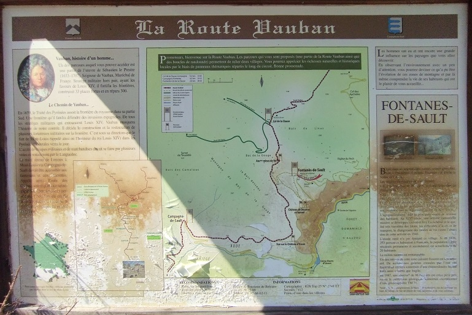
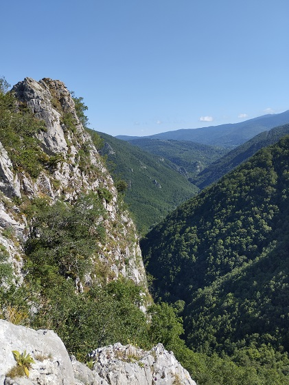

Après le percement de la Nationale 118 suivant l'Aude, l'ancien chemin Vauban reliant Quillan ou Puivert à Mont Louis fut abandonné.
Aussi, les villages qui se trouvaient sur les contreforts du petit plateau de Sault dans les hauteurs de l'Aude, traversés par cette route Vauban se retrouvèrent alors très isolées
Une route partant de l'ancienne nationale 118 fut alors percée pour donner un accès aux communes de Fontanès de Sault et de Campagna de Sault.
La route reliant les 2 communes fut améliorée, avec le percement d'un tunnel sous l'ancien chateau de Dournès, mais n'est resté qu'un large chemin de terre.
(La nationale 118 a été déclassée depuis en Route départementale 118.)


Vue du cours de l'Aude (même si on n'aperçoit pas la rivière), vers Bessède et Le Clat


Vue du château d'Usson

Abreuvoir du haut du villages
Ferme du haut du village avec ses gentils chiens
Eglise en cimetière
Ancienne école communale devenue mairie
Maison de la réserve naturelle TM71 - cette maison est transversale avec la rue de dessus
Abreuvoir du bas du villages
Panneaux informatifs présents dans le villages (cliquer pour avoir une meilleure définition)
Vue du village depuis le tunnel de Dournès
Panneau de présentation du chemin Fontanès / Campagna de Sault et creusement du tunnel pour raccourcir l'ancien chemin Vauban (cliquer pour avoir une meilleure définition)
Le Tunnel sous l'ancien Chateau de Dournes
Panneau de présentation du château médiéval de Dournes (cliquer pour avoir une meilleure définition)
Vue de la plateforme du chateau depuis le chemin Vauban
Vue du rocher du point haut du chateau de Dournes - premier plateau
Premier plateau, ancienne citerne ?
Vue depuis le premier plateau de Fontanès de Sault


Vue depuis le premier et deuxième plateau vers Bessède (ou le Clat ?)
Vue du deuxième plateau depuis le premier
Vue vers le château d'Usson
Vue de la route de Fontanès depuis le château

Vue du premier plateau depuis le deuxième - remarquer la seule rangée de pierre subsistante du chateau
Vue du troisième plateau depuis le deuxième - remarquer la seule rangée de pierre subsistante du chateau
Vue du troisième plateau et du cours de l'Aude jusqu'au château d'Usson depuis le deuxième plateau